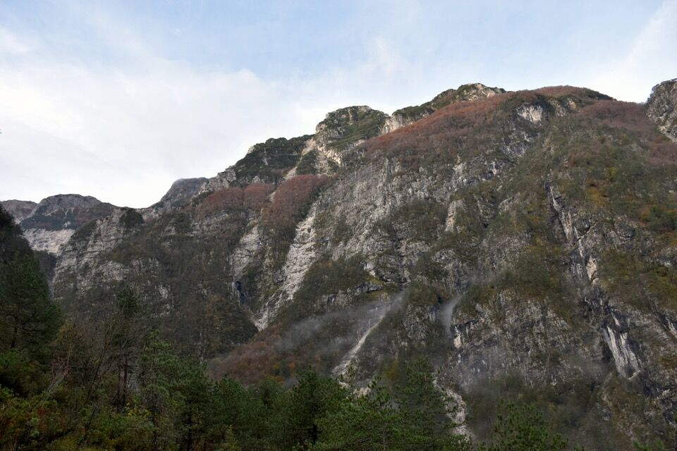
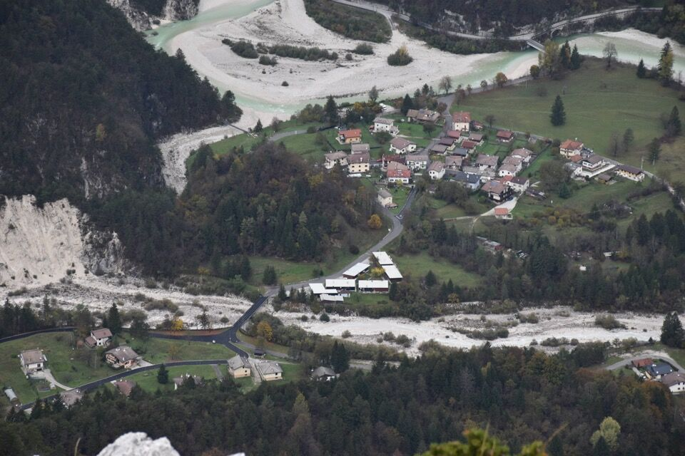
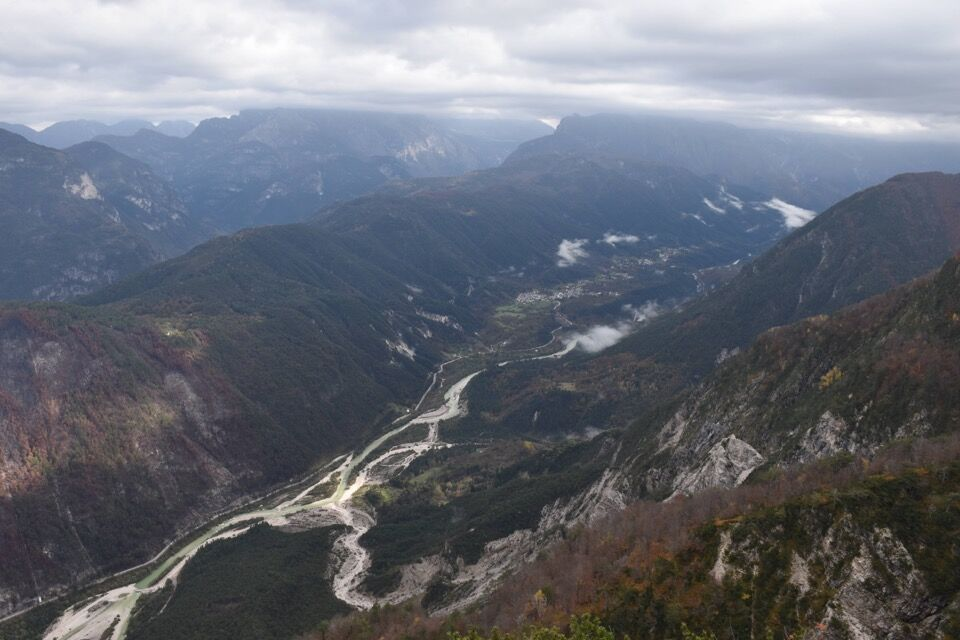
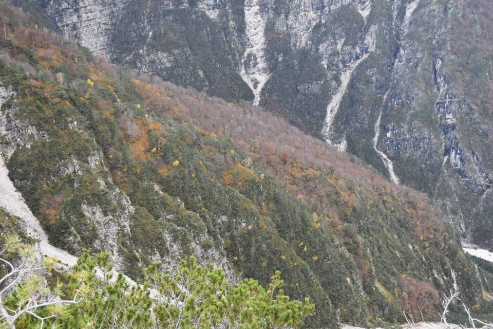
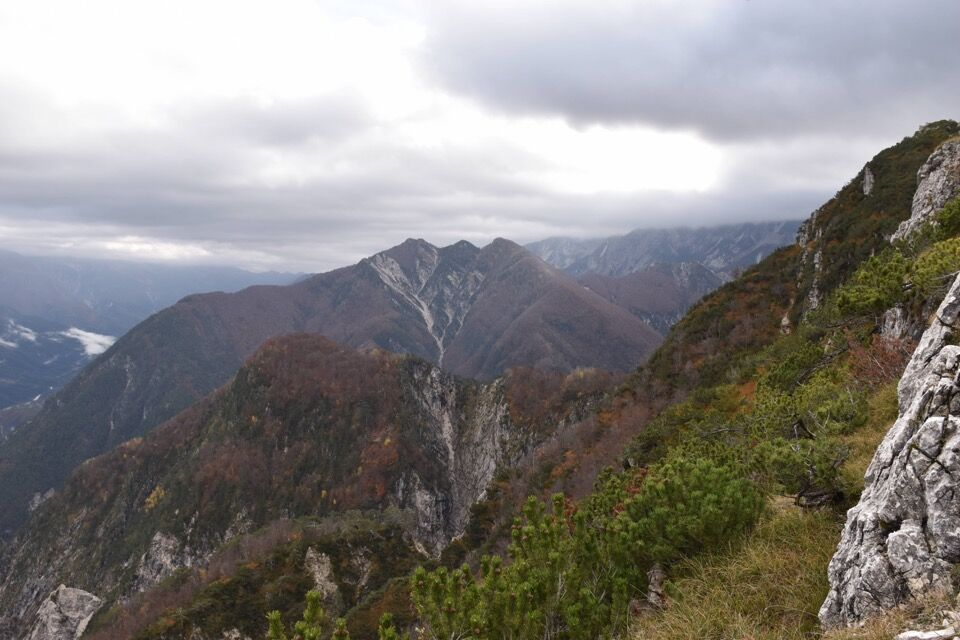
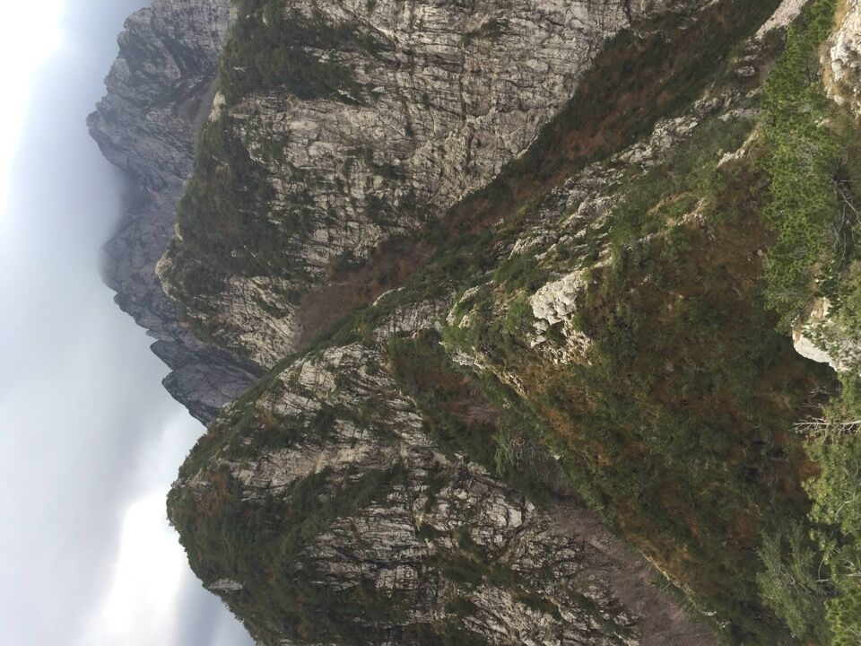
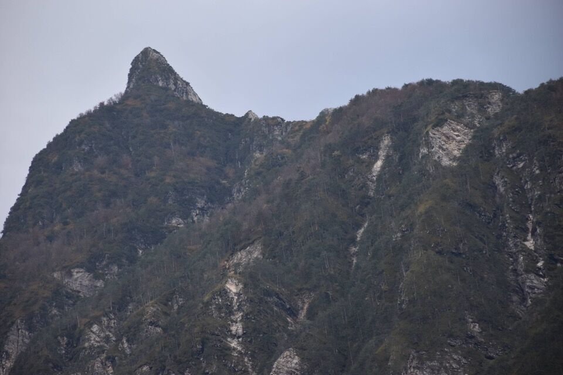
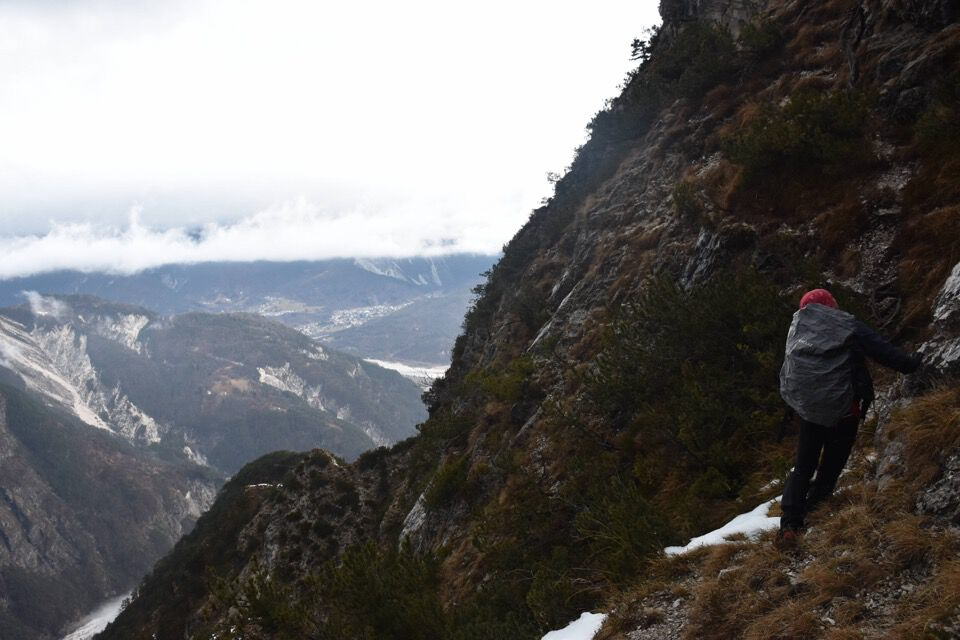
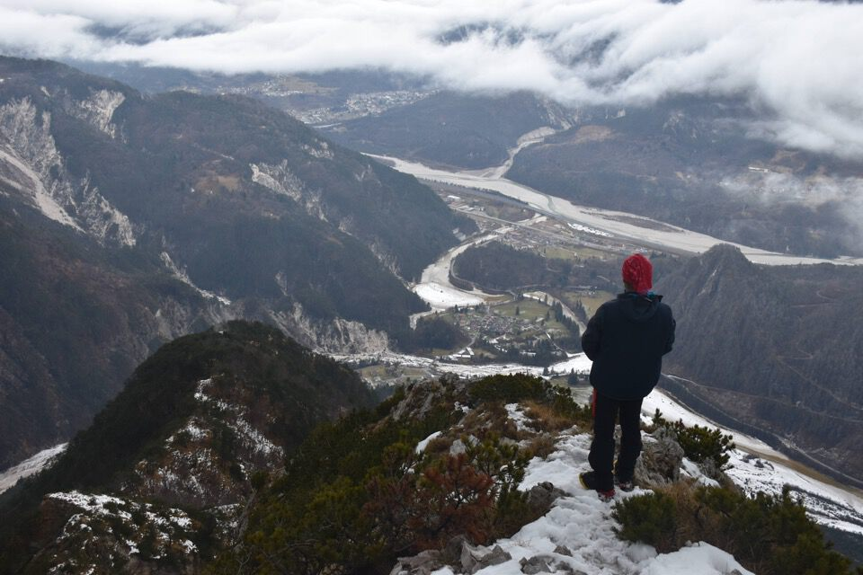

Mitica cima aguzza ben visibile quando si transita per Resiutta: come è naturale, è stata la prima che ho salito nel gruppetto di cime a Nord del Plauris.
A. M. Beltrame, di Resiutta, mi informa che la pronuncia corretta è spiç, con la c dolce.
Ho preso il sentiero dell'ex-acquedotto, ora CAI 702b, che corre alto rispetto al rio Resartico: con tanto di gallerie e facili passaggi attrezzati, permette di compiere un bell'anello per raggiungere il ricovero Resartico.
Il vallone Lusument, culminante nella forcella Rus.
La traccia più bassa di accesso al Pusti Gost, che probabilmente è quella segnata sulla carta Tabacco, inizia in prossimità di quel canalino detritico. Una settimana dopo l'ho utilizzata per salire su Vetta Criuze.
Ho anche approfittato per trovare e pulire un secondo accesso, quello descritto su Trois Neris, in prossimità di due enormi massi (ometti).
Superata la cima, inizio a seguire una traccia (ometto) che mi porta in un canalino con salti; lascio stare e vado a prendere una traccia più bassa che avevo visto prima, su un pendio di mughi abbastanza uniforme.
Inizio a seguire una pista di camosci in mezzo ai mughi; unici segni umani forse due rami spezzati all'inizio.
Dopo un po' di acrobazie fra i mughi arrivo ad un forcellino, poi proseguo nel versante contiguo, più ripido, con traccia più evidente, infine arrivo in cresta proprio nell'ultimo forcellino prima della cima.
Il panorama verso Povici, Resiutta e Moggio è magnifico.

Povici.
Val Resia.
Il Pusti Gost.
Verso i monti Cuzzer (in alto), Pléchie (in centro), punta Linclìn (in basso).
Dettaglio sulla vicina ma irraggiungibile punta Linclìn.
Vista sul vallone Lusument e il Pusti Gost a sx.
Verso le quote 1264m a sx e 1320m a dx, divise da forcella Rus, che fa capo al vallone Lusument. Si vede una evidente traccia e un omino più in là sulla cresta, forse da lì si sale/scende più velocemente. Sarebbe opportuno provare anche a salire per cresta sulla quota 1264m, da cui facilmente si scende a forcella Rus.
Di nuovo a Povici.
Bis: Epifania 2025, con Kelen
Esco di casa che piove, ma non potevo restare a dormire? Ci troviamo a Gemona, previo accordo di percorrere un black track armelliniano, ma nessuno dei due ha portato il libro, né fotografato la relazione! Andiamo bene...
Con l'entusiasmo sottoterra ci dirigiamo verso la val Resia, nuvole basse e pioggerella tutto attorno; appena visto... vuoi andare sullo Spiç? Andiamo.
Ripercorriamo l'ottima pista di camosci che avevo seguito la scorsa volta.
 Il tempo molto incerto ci ha fatto scartare altre possiblità più avventurose. In compenso in discesa ho ripassato i due accessi al Pusti Gost dal canale Lusument, ovvero siamo entrati per quello alto (descritto da Armellini) per poi uscirne subito da quello basso. Noi ci si diverte così...